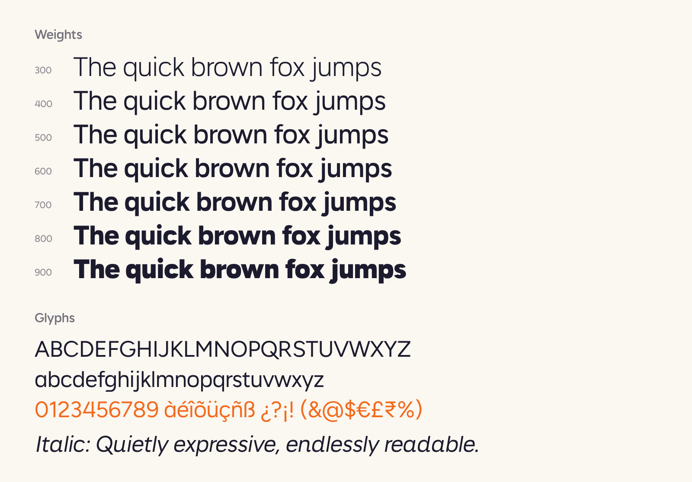

Odra Sans is a contemporary sans serif family for interfaces, editorial layouts and brand work. Its open apertures, generous x-height and calm, even rhythm keep text clear at small sizes, while the tighter details give headlines a confident voice.

The family comes in seven weights, from Light to Black, each with a matching italic. The italics are true italics rather than slanted romans: letters such as a, f, i, k, l, r, t, v, w and y have their own cursive-influenced forms, and round letters receive optical correction so curves keep their weight when slanted.
Odra Sans supports the Google Fonts Latin Core character set and is available as a variable font with a weight axis. It is a derivative of Figtree and is released under the SIL Open Font License.
To contribute, see github.com/abhilashsahoo/odra-sans.